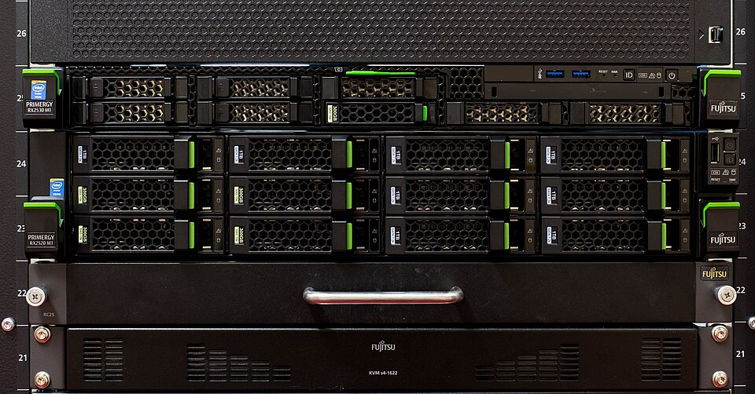
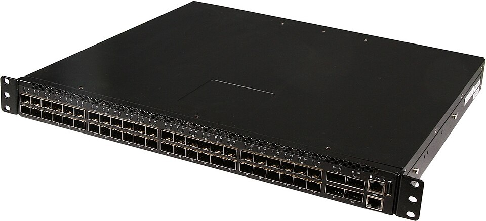
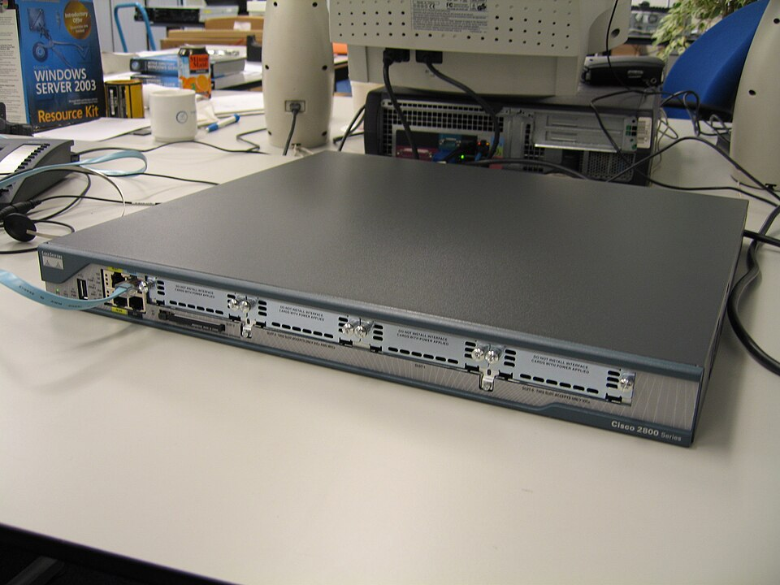
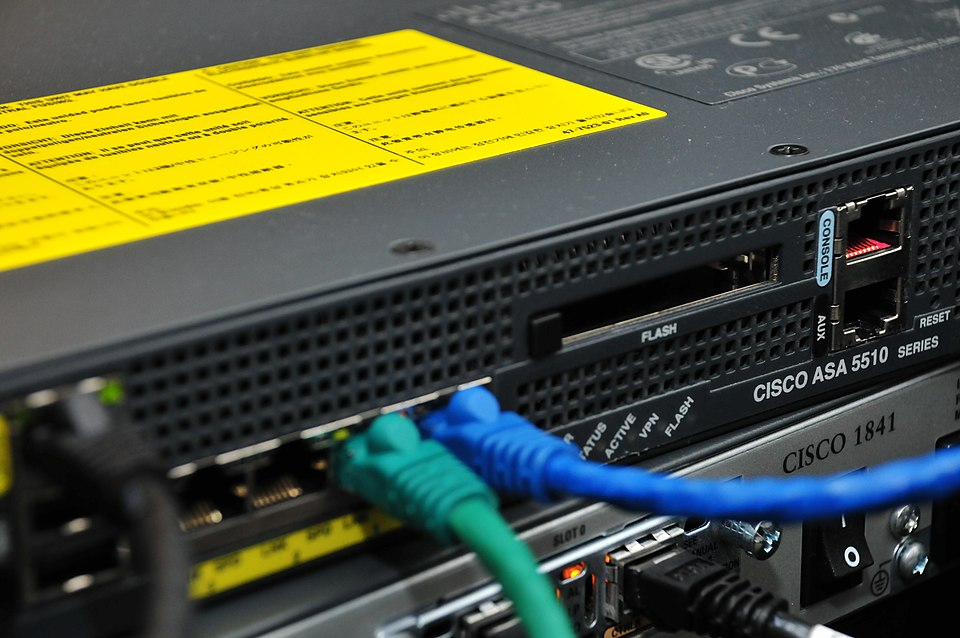
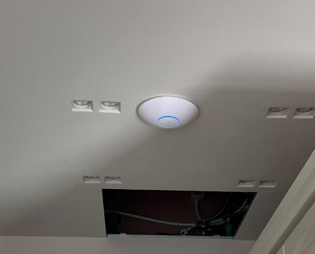

Chapter 10 was about how bits move. This chapter is about who's asking for them, who's answering, and who is between them deciding whether they're allowed to talk at all.
Client/Server Architecture
The dominant communication model in enterprise computing is client/server architecture. The idea is simple: one device, the server, provides a specific service and waits for requests. Other devices, the clients, initiate connections to consume that service. The server is always available; the client connects when it needs something.
At its core, a server is a computer that serves a resource to other computers. That resource might be a web page (web server), a file (file server), an email (mail server), or an IP address (DHCP server). The pattern is always the same: the server holds something other computers need, listens for incoming requests, and delivers the resource on demand. The word "server" names a role — what the machine does — not what it looks like.
Because "server" names a role, any computer can play it. Your laptop is acting as a client right now when it loads a web page; it would act as a server if you started local web server software and a classmate browsed to your machine. A file server could be a tower PC in the corner of a small office or a virtual machine running in a cloud data center on the other side of the country. The software determines the role; the hardware is secondary.
In large organizations, however, dedicated server hardware earns its keep. Enterprise servers are typically rack-mounted: thin, horizontal computers — often just 1U or 2U (1.75 to 3.5 inches tall) — that slide into floor-to-ceiling metal racks in a temperature-controlled server room. These machines are built to run for years without stopping: redundant power supplies (so a failed power supply doesn't bring the server down), ECC (error-correcting) RAM (so a single-bit memory error doesn't corrupt data), hot-swappable drives, and remote management ports (Dell's iDRAC, HP's iLO) that let administrators reboot or diagnose a server without walking into the room. A single rack can hold dozens of servers and the switches that connect them — all in the space of a wardrobe.

Every service covered in this textbook fits the client/server model:
| Service | Client | Server | Protocol |
|---|---|---|---|
| Web browsing | Browser (Chrome, Edge) | Web server (IIS, Apache, nginx) | HTTP / HTTPS |
| Outlook, Thunderbird | Exchange, Postfix | SMTP, IMAP | |
| File sharing | Windows File Explorer | Windows File Server | SMB (port 445) |
| Authentication | Windows workstation | Active Directory (Domain Controller) | Kerberos, LDAP |
| Database | Application server | SQL Server, Oracle | TDS, JDBC |
| IP assignment | Any new device | DHCP server | DHCP |
| Name resolution | Any device | DNS server | DNS |
Notice that the model stacks. A web application involves multiple client/server relationships: your browser is a client to the web server; the web server is itself a client to the database server behind it. The same machine plays different roles depending on which relationship you're examining.
Why enterprises rely on client/server: Centralization is the key advantage. Instead of storing files on 200 individual workstations, a file server holds everything in one place — backed up nightly, accessible from any authorized device, with permissions enforced centrally. Instead of managing accounts on every PC, Active Directory stores all user accounts on the domain controller — a new hire's account is created once and works everywhere. Patches and updates are applied to the server, and all clients benefit immediately. From an IT management perspective, a network of 200 workstations all pointing at the same server is far easier to maintain, secure, and audit than 200 independent machines each managing their own data and accounts.
Peer-to-Peer Architecture
In a peer-to-peer (P2P) architecture, there is no dedicated server. Every device is simultaneously client and server — it can request resources from others and provide resources in return. The network is decentralized: no single machine coordinates everything, and removing any one node doesn't bring down the system.
P2P excels at specific problems. BitTorrent is the classic example: when you download a file via torrent, you're downloading different pieces from dozens of users simultaneously while uploading the pieces you already have to others. The more people sharing a file, the faster everyone downloads — the opposite of a central server, which slows down as more clients pile on. Blockchain technologies like Bitcoin are also P2P at their core — thousands of nodes each hold a copy of the ledger, and there is no single authority that can be shut down or corrupted. Early voice-over-IP services like Skype used P2P to route calls directly between endpoints without a central call server.
Despite its advantages, P2P is rarely chosen for enterprise IT systems. You can't patch a "server" if there is no server, and IT administrators need a central point to push policy changes and respond to incidents. Availability is inconsistent: a file on a central server is always reachable, but a file on a peer's laptop is unavailable when that laptop is powered off or off-site. And regulations governing sensitive data typically require demonstrable control over where data is stored and who can access it — something P2P makes difficult to audit or enforce.
Network Devices
Every network is built from a handful of device types, each with a specific job. A switch connects devices on the same local network; a router connects networks together; a firewall enforces policy at network boundaries; a wireless access point extends the network to wireless clients. Click each device in the diagram below to see what it does, where it sits, and what real-world hardware looks like.
Switch
A switch is the hub of your local area network — the device everything wired connects to, directly or indirectly. When a frame arrives at a switch port, the switch reads the destination MAC address and forwards the frame only to the port that MAC address is known to be on. This is smarter than an old-school hub, which sent every frame out every port regardless of destination. Switches learn MAC addresses by watching incoming traffic: when a frame arrives from an unknown source, the switch records which port it came in on and uses that mapping for future traffic. The RJ-45 wall jack in your office connects through conduit to a switch in a nearby wiring closet; everything flows through that switch before reaching the router. Enterprise switches also commonly supply Power over Ethernet (PoE), letting a single Ethernet cable carry both data and power — ideal for wireless access points and IP phones that otherwise require separate power adapters.

Router
A router's job is to move packets between networks. Where a switch connects devices within a single network using MAC addresses (Layer 2), a router connects separate networks using IP addresses (Layer 3). When a packet leaves your internal network for the internet, it hits the router, which reads the destination IP address, consults its routing table, and forwards the packet one hop closer to its destination. Internet traffic crosses a chain of routers — each making its own forwarding decision — until it reaches the target host. At home your ISP-provided gateway combines a router, switch, and wireless AP in one box; in an enterprise these are separate devices. The router is also where NAT (Network Address Translation) happens: it translates the private IP addresses of your internal devices (192.168.x.x, 10.x.x.x) to the single public IP your ISP assigned, allowing hundreds of devices to share one internet address.

Firewall
A firewall sits at the boundary between networks — most critically, between your internal network and the internet — and inspects every packet crossing that boundary. Rules specify which traffic is allowed and which is blocked, evaluated in order from top to bottom. The default posture is asymmetric: outbound traffic from inside is allowed; unsolicited inbound traffic from the internet is blocked. Most enterprise firewalls use stateful inspection, meaning they track active connections. When your workstation opens a TCP connection to a web server, the firewall records that session. When reply packets arrive from the web server, the firewall recognizes them as belonging to an established session and lets them through automatically — no explicit inbound rule required. Packets that arrive without a matching session entry are dropped.

Wireless Access Point
A wireless access point is essentially a switch port without a cable. It broadcasts a Wi-Fi signal and bridges wireless devices onto the wired Ethernet network; from the IP layer's perspective, a laptop connected via Wi-Fi and one plugged into the wall are the same — both are just devices hanging off the switch. Enterprise APs are dedicated ceiling-mounted units, not built into the router, and that separation enables stronger authentication. Instead of a shared passphrase that every employee knows and can share, enterprise wireless uses 802.1X: each user authenticates with their personal Active Directory username and password. The AP passes the credentials to a RADIUS server, which checks them against Active Directory and signals the AP to admit or reject the device. IT can revoke a specific employee's wireless access instantly by disabling their account — no password change required — and can see exactly which user was on which AP at any point in time.

NAT
IPv4's 4.3 billion addresses are not enough for a world with billions of internet-connected devices. Network Address Translation (NAT) solves this. When your home router or enterprise firewall connects to the internet, it has one public IP address assigned by the ISP. Every device behind it has a private address (the RFC 1918 ranges: 10.x.x.x, 172.16–31.x.x, 192.168.x.x) that is not routable on the public internet.
When an internal device sends a packet outbound, the NAT device rewrites the source IP from the private address to the public IP and records the mapping. When the reply arrives, it reverses the translation and delivers the packet to the correct internal device. The internet sees only one IP; internally, hundreds of devices communicate simultaneously through that single address. This is why every device on your home network has an address like 192.168.1.x, yet websites only see your ISP-assigned IP.
VLANs
By default, every port on a switch belongs to the same network segment — a device in accounting and a device in HR plugged into the same switch can communicate directly at Layer 2. A VLAN (Virtual Local Area Network) changes this: it logically divides a physical switch (or a set of interconnected switches) into isolated broadcast domains. A device on the Finance VLAN cannot send frames directly to a device on the Guest VLAN, even if they share the same physical switch. Traffic between VLANs must pass through a Layer 3 device — a router or a switch configured for routing — where access control lists can inspect and control it.
A typical enterprise network has separate VLANs for employees, servers, guest Wi-Fi, IP phones (Voice VLAN), and network device management. Each VLAN behaves as its own logical network, giving IT the ability to segment traffic for security and performance without running separate physical cable runs for every group.
VPN
A VPN (Virtual Private Network) creates an encrypted tunnel through the public internet. Traffic inside the tunnel is encrypted — anyone intercepting packets in transit sees only ciphertext. Two configurations are common in enterprise environments:
- Remote access VPN: An employee working from home runs a VPN client that establishes an encrypted tunnel to the company's VPN gateway. From a networking perspective, the laptop appears to be physically on the corporate LAN — it can reach internal file servers, printers, and domain controllers as if sitting in the office.
- Site-to-site VPN: Two office locations connect their networks permanently via a tunnel between two firewalls or routers. The Chicago and St. Louis offices share resources over the internet without exposing that traffic to interception.
Wireless Networking
The access point is the device. The radio waves it broadcasts are the medium — and the medium has rules of its own.
Wi-Fi (IEEE 802.11) operates on two main frequency bands: 2.4 GHz and 5 GHz. Newer hardware also uses 6 GHz (Wi-Fi 6E), but most networks you encounter still live on the first two. The choice between bands is a tradeoff between range and speed. Lower frequencies travel farther and pass through walls more easily; higher frequencies carry more data but attenuate faster and struggle with obstacles. A laptop sitting next to the access point is better off on 5 GHz; a phone two rooms and three drywall partitions away will usually do better on 2.4 GHz.
Each band is divided into channels — narrow slices of the spectrum that access points actually transmit on. The 2.4 GHz band is famously crowded: only three non-overlapping channels (1, 6, and 11 in North America), shared with microwave ovens, Bluetooth devices, baby monitors, and every neighbor's router. The 5 GHz band offers far more non-overlapping channels and less interference, which is the other reason it's faster in practice. In an apartment building, the difference is the difference between a usable connection and a useless one.
Signal strength matters too. Wi-Fi signal attenuates with distance and with anything it has to pass through — drywall is mild, brick is bad, a refrigerator full of water is worse, and a steel-reinforced concrete wall is essentially opaque. Enterprise deployments don't rely on a single powerful AP; they use many lower-power APs spread across the ceiling, each covering a small area, and let clients roam between them as users walk through the building. That's why an office of any size has a dozen identical white discs mounted overhead rather than one giant antenna in the server room.
Authentication is the other half of the story, and it's where home and enterprise diverge sharply. At home, all devices share a single passphrase (pre-shared key) — anyone who knows it gets in, and revoking access means changing the password and reconnecting every device in the house. In enterprise environments, 802.1X and RADIUS replace that shared secret with per-user credentials tied to Active Directory, so access is individual, auditable, and instantly revocable. When an employee leaves, IT disables the account and that person is off the Wi-Fi the moment their device tries to reauthenticate. No one else has to change a password.
Chapter 12 is about the people and procedures that keep all of this running — the sysadmin who provisions the accounts, patches the servers, and gets paged at 3 AM when something breaks.